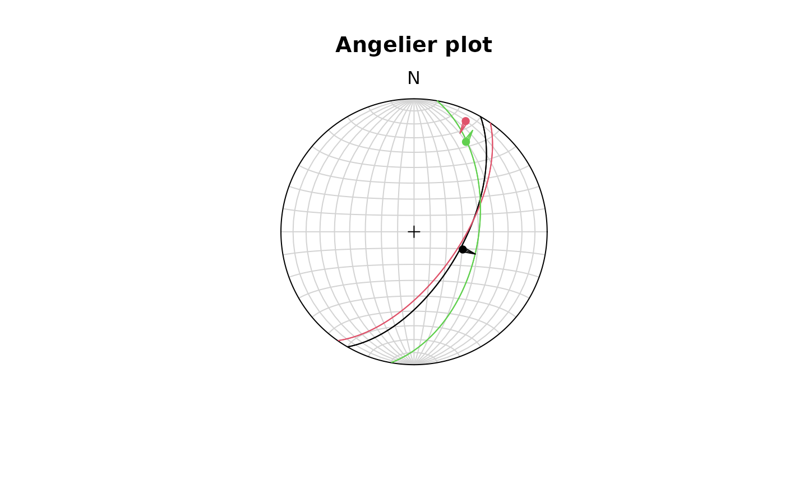
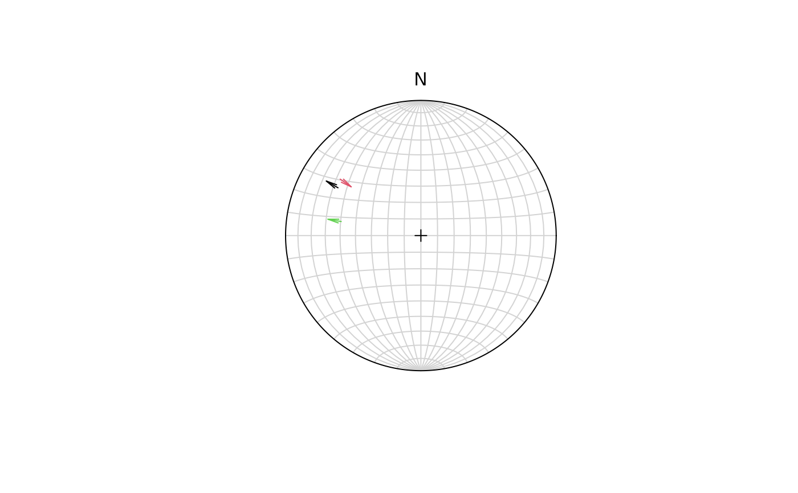

Add fault data to existing plot
Usage
fault_plot(x, type = c("angelier", "hoeppner"), ...)
hoeppner(x, pch = 1, col = "black", cex = 1, bg = NULL, points = TRUE, ...)
angelier(
x,
pch = 1,
lwd = 1,
lty = 1,
col = "black",
cex = 1,
points = TRUE,
bg = NULL,
...
)Arguments
- x
"Fault"object- type
character. One of
"angelier"(for "Angelier plot") or"hoeppner"(for "Hoeppner plot"). See details.- ...
arguments passed to
stereo_arrows()- points
logical. Whether the lineation points (Angelier plot) or poles (Hoeppner plot) should be added to the plot
- lty, lwd, cex, pch, col, bg
plotting parameters
Details
Angelier plot shows all planes as great circles and lineations as points. Fault striae are plotted as vectors on top of the lineation pointing in the movement direction of the hangingwall. Easy to read in case of homogeneous or small datasets.
Hoeppner plot shows all planes as poles while lineations are not shown. Fault striae are plotted as vectors on top of poles pointing in the movement direction of the hangingwall. Useful in case of large or heterogeneous datasets.
References
Angelier, J. Tectonic analysis of fault slip data sets, J. Geophys. Res. 89 (B7), 5835-5848 (1984)
Hoeppener, R. Tektonik im Schiefergebirge. Geol Rundsch 44, 26-58 (1955). https://doi.org/10.1007/BF01802903
Examples
f <- Fault(
c("a" = 120, "b" = 125, "c" = 100),
c(60, 62, 50),
c(110, 25, 30),
c(58, 9, 23),
c(1, -1, 1)
)
stereoplot(title = "Angelier plot")
angelier(f, col = 1:nrow(f), pch = 16, scale = 0.1)

stereoplot(title = "Hoeppner plot")
hoeppner(f, col = 1:nrow(f), cex = 1, scale = 0.1, points = FALSE)
# or
stereoplot()
fault_plot(f, type = "hoeppner", col = 1:nrow(f), cex = 1, scale = 0.1, points = FALSE)
